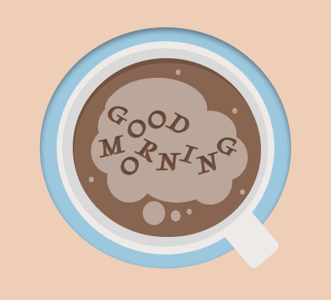

Portfolio
Digital prototyping
During the crutial part of our project, namely the prototyping phase,our team utilized the research data collected during the empathy and define phases to create prototypes. Using Figma, our team members individually designed four different versions of the product based on the analysis and understanding of the research data. These versions served as initial iterations of the prototype. To evaluate the effectiveness of each version, we conducted interviews with potential users to gather feedback. This feedback was then carefully analysed and considered.Example of my first iteration, which was quite simple can be found below via button "First Iteration"'. Considering the feedback received from the testing phase, we consolidated the findings and combined the best elements from each version into a new digital prototype. This iterative process allowed us to refine the design and address any identified areas for improvement.("Second Iterattion" button).Once the final digital prototype was completed, we conducted another round of feedback sessions. This feedback helped us identify any remaining points that required changes or improvements. We carefully incorporated the feedback to ensure that the final prototype was user-cantered and aligned with the project's goals and objectives.
First Iteration Second Iteration Final PrototypePrototype Survey
Once we gathered all the information from our empathy and define phases and created our prototypes, we designed a survey to gather more information on how our users would react. I collaborated with one of my team members to create a simple Google Form for this purpose. Through the survey, we aimed to understand which parts of the prototype our users liked and which ones gave them some trouble. Did they appreciate the navigation? What aspects were good, and what needed improvement? After reviewing the survey results, our team collectively analyzed the feedback. We then applied the insights gained from the survey to refine our prototype. This iterative process allowed us to align the prototype with our users' needs and preferences, facilitating further progress in our project. By actively considering user feedback and incorporating it into our design, we ensured that our prototype would better meet the needs and desires of our target audience. This approach has been instrumental in advancing our project and ensuring its success.
Survey
Interviews - Prototype
In the following document you can find a summary of the user responses collected from interviews conducted to gather feedback on our digital prototypes. The objective of these interviews was to evaluate users' perceptions of the prototypes' design, layout, and overall structure. By analyzing the insights obtained, we can make informed decisions and implement necessary improvements for future iterations. During the interviews, we engaged with users to understand their thoughts and impressions of the prototypes. We asked specific questions to gauge their satisfaction with the design elements, navigation, and overall user experience. Their feedback provided valuable insights that will guide our decision-making process.Users expressed appreciation for the prototypes' clean and intuitive design, which made it easy for them to navigate and understand the content. The layout was well-received, with users finding it visually appealing and organized. They particularly praised the clear call-to-action buttons and the logical flow of information. However, the interviews also highlighted areas that require attention and improvement. Some users mentioned that certain features were not easily discoverable, indicating a need for improved visibility and guidance.By incorporating these improvements into our next prototype iterations, we aim to create a digital product that aligns closely with our users' needs and expectations.
Survey
Persona
After gathering all the information from the survey and interview we had made, it was time for us to create our user personas. After analyzing the data we had gathered through our different research methods, I started creating the two following personas. Since I did not have previous experience with creating personas, I always checked with my group members to get feedback and their opinion on how I did. Moreover, after receiving more feedback from teachers and my colleagues, I can say that the personas I have created were good.
Persona 1 Persona 2
User Scenario Video
After gathering information from our research, we were asked to create a video for our user scenario. The whole experience was very interesting. Besides learning how to edit, voiceover, and film, we got to go more in-depth into our research and understand who our users are, what they do, and what they want and like. In my opinion, this was one of my favorite assignments - fun, challenging, and yet very helpful.
Download Youtube

Figma
Since I am not that experienced with Figma, I have decided to start creating small projects like this GIF here to improve my Figma skills so I can improve my prototyping. I have started familiarizing myself with Figma through different tutorials and mini-projects online.
View